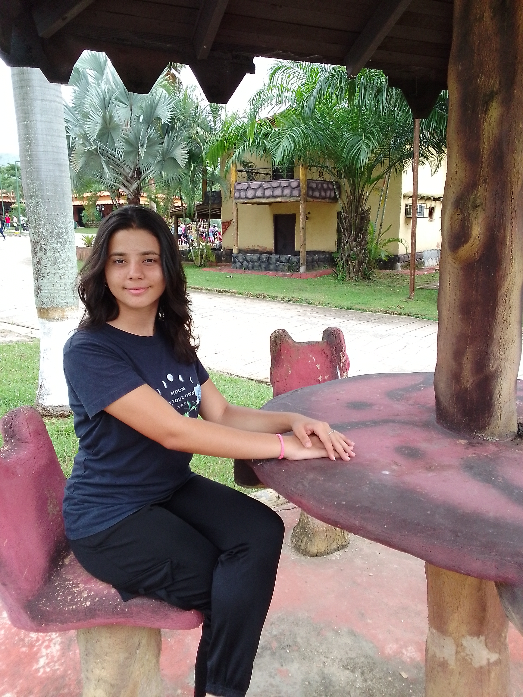

Oriana Hernandez | WDD 130
Hello! My name is Oriana Hernandez and I am from Calabozo, Venezuela. I enjoy reading, listening to music and watch movies. I am a computer engineering student at a university in my small town.
Hello! My name is Oriana Hernandez and I am from Calabozo, Venezuela. I enjoy reading, listening to music and watch movies. I am a computer engineering student at a university in my small town.